품질경영기사 (2011-10-02 기출문제)
1과목: 실험계획법
1. 인자 A, B는 모수인자이고, C인자가 변량인 반복없는 3원배치 실험을 하였다. ℓ=3, m=3, n=2이고, Ve=4.3, VA×C=106.7, VB×C=97.3, VC=57.4이었다면,
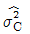
의 추정값은 약 얼마인가?- 4.8
- 5.9
- 6.4
- 28.7
(정답률: 73%)
2. 인자 A가 4수준이고, 인자 B가 2수준이면 교호작용 A×B는 2수준계 직교배열표에 몇 개의 열에 배치되는가?
- 1
- 2
- 3
- 4
(정답률: 85%)

3. 3명의 작업자가 개별적으로 작업하는 제품에 대해, 인원별 각각 150개씩 샘플링하여 외관검사하였더니 표와 같은 데이터가 얻어졌다. 적합품이면 0, 부적합품이면 1을 갖도록 하는 계수치 1원배치를 적용하여 분산분석을 실시한다면, 총변동(ST)은 약 얼마인가?
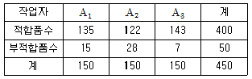
- 18.71
- 23.82
- 44.4A4
- 45.00
(정답률: 85%)
4. 파라미터 설계가 갖는 주요 특징이 아닌 것은?
- 주로 직교배열표를 이용하여 배치한다.
- 요인배치법을 많이 사용하여 교호작용을 파악한다.
- 제어인자는 내측배열에 배치하여 제어인자의 최적조건을 찾아 준다.
- 잡음인자를 외측배열에 배치하여 잡음에 따른 산포의 크기를 파악할 수 있도록 한다.
(정답률: 61%)
5. 일반적으로 오차 eij는 정규분포N(0, σ2e)으로부터 확률추출된 것이라고 가정한다. 이 가정이 의미하는 것이 아닌 것은?
- 정규성(Normality)
- 독립성(Independence)
- 불편성(Unbiasedness)
- 최소분산성(Minimum Variance)
(정답률: 72%)
6. S(xx)=2217, S(xy)=330.7, S(yy)=53.07, n=20일 때 회귀직선 yi=β0+β1xi+ei에서 기울기 (β1)은 약 얼마인가?
- 0.0239
- 0.149
- 0.84
- 6.23
(정답률: 80%)
7. 표는 지분실험을 실시하여 얻은 분산분석표의 일부이다. 이때  의 값은 약 얼마인가? (단, A, B, C인자는 변량인자이다.)
의 값은 약 얼마인가? (단, A, B, C인자는 변량인자이다.)
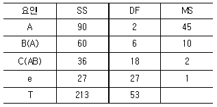
- 1.94
- 2.50
- 4.50
- 45
(정답률: 65%)
8. 표는 자사 제품 4개, 타사 제품 6개에 대해 인장강도 측정을 한 결과이다. 이 측정 결과에 대한 직교분해의 경우에 관한 설명으로 옳지 않은 것은?
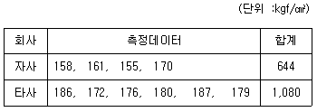
- 선형식의 변동은
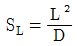
으로 계산한다. - 선형식은 1개로
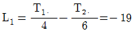
이다. - 단위수
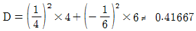
이다. - 선형식의 자유도는 (인자의 반복수)－1로 인자의 자유도와 항상 같다.
(정답률: 95%)
9. 33형 요인실험에서 9개의 블록을 만들 때 요인 AB2C2와 AC 정의대비라고 하면 블록과 교락되는 정의대비는?
- AB2
- AC2
- BC
- BC2
(정답률: 70%)
10. 반응압력A)를 4수준, 반응시간(B)를 3수준으로 반복 2회 실험을 하여 반복있는 2원배치법으로 분산분석한 결과 A2B2가 최적조건으로 나타났다. 최적조건의 신뢰한계값을 구할 때 유효반복수(ne)얼마인가? (단, 교호작용은 무시한다.)
- 2
- 3
- 4
- 6
(정답률: 61%)
11. 인자 A의 수준수가 4이고, 인자 B의 수준수가 3인 반복이 없는 2원배치법 실험에서 오차 변동의 자유도(νe)는 얼마인가?
- 6
- 9
- 12
- 20
(정답률: 89%)
12. 인자 A는 4수준, 3회 반복인 1원 배치에서 분산 분석한 결과 SA가 2.96, ST가 4.29일 때 인자 A의 순변동은 약 얼마인가?
- 2.295
- 2.461
- 3.625
- 3.791
(정답률: 80%)
13. 모수인자 A를 4수준 택하고 실험일(B)을 3일 택하여 반복이 없는 실험을 행한 결과, SA=14.3, SB=6.0, Se=2.4이었다. 일간분산의 추정치(
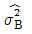
)얼마인가?- 0.65
- 0.87
- 0.90
- 1.20
(정답률: 60%)
14. 23형 요인배치법 실험 결과 표와 같은 데이터를 얻었다. 인자 B의 변동(SB)는 얼마인가?
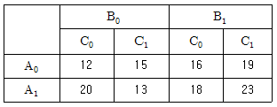
- 25
- 28
- 32
- 40
(정답률: 73%)
15. 관측치 y1,y2,⋯,yn에서 제곱합(SS:Sum of Squares)을 구하는 식으로 옳지 않은 것은? (단, G는 관측치의 합계이며,
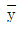
는 평균치이다.)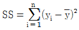
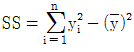
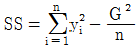
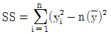
(정답률: 72%)
16. 1차 단위가 1원배치인 단일분할법에서 A를 1차 단위, B를 2차 단위, 블록 반복(R) 2회의 실험을 실시한 결과 다음의 블록반복(R)과 A의 이원표를 얻었다. 블록 반복(R)간의 제곱합(SR은 약 얼마인가? (단, m은 B의 수준수이다.)
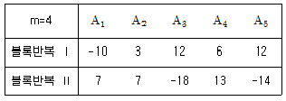
- 19.6
- 22.5
- 28.9
- 42.0
(정답률: 57%)
17. L9(34)형 직교배열표에 관한 설명으로 옳지 않은 것은?
- 군의 수는 3이다.
- 열의 수는 4이다.
- 실험 횟수는 9이다.
- 각 열의 자유도는 2이다.
(정답률: 90%)
18. 실험계획의 기본원리 중에서 실험의 환경이 될 수 있는 한 균일한 부분으로 나누어 신뢰도를 높이는 원리는?
- 반복의 원리
- 블록화의 원리
- 랜덤화의 원리
- 직교화의 원리
(정답률: 97%)
19. 33형의 1/3 반복에서 I=ABC2을 정의대비로 9회 실험을 하였다. 요인 A와 관련된 설명으로 옳지 않은 것은?
- A는 자유도 2를 갖는다.
- AB2는 요인 A의 별명이다.
- BC2는 요인 A의 별명이다.
- AB2C는 요인 A의 별명이다.
(정답률: 70%)
20. 반복 없는 2원배치법에서 A는 4수준, B는 3수준인 경우 2개의 결측치가 발생했다면 오차 항의 자유도는 얼마인가?
- 3
- 4
- 5
- 6
(정답률: 90%)
2과목: 통계적품질관리
21. 다음 설명 중 옳지 않은 것은?
- 결정계수는 상관계수의 제곱과 같다.
- 공분산은 원 데이터의 측정 단위에 따라 달라진다.
- 모상관계수의 구간추정은 Z 변환하여 정규분포를 사용할 수 있다.
- 상관계수의 값이 0에 가까울수록 일정한 경향선으로부터의 산포는 작아진다.
(정답률: 79%)
22. 표본평균( )의 표준오차를 원래 값의 1/16로 줄이기 위해서는 표본의 크기를 원래보다 몇 배 늘려야 하는가?
)의 표준오차를 원래 값의 1/16로 줄이기 위해서는 표본의 크기를 원래보다 몇 배 늘려야 하는가?
- 16배
- 32배
- 64배
- 256배
(정답률: 88%)
23. 컴퓨터 주변기기 제조업자는 인터넷 광고 사이트에 배너 광고를 하려고 계획 중이다. 이 사이트에 접속하는 사용자 1,000명을 임의 추출하여 사용자 특성을 조사한 결과가 표와 같을 때 다음 중 옳지 않은 것은?
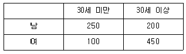
- 임의로 선택한 사용자가 30세 미만일 확률은 0.35이다.
- 임의로 선택한 사용자가 30세 이상의 남자일 확률은 0.2이다.
- 임의로 선택한 사용자가 여자이거나 적어도 30세 이상일 확률은 0.45이다.
- 임의로 선택한 사용자가 남자라는 조건하에서 30세 미만일 확률은 약 0.56이다.
(정답률: 87%)
24. 계수치 샘플링검사 절차 －제2부：고립 로트 검사용 한계 품질(LQ) 지표형 샘플링 검사방식(KS Q ISO 2859－2：2010)에 관한 설명으로 옳지 않은 것은?
- 절차 A의 샘플링 방식은 로트 크기 및 한계품질(LQ)로부터 구해진다.
- 절차 B의 샘플링 방식은 로트 크기, 한계품질(LQ) 및 검사수준에서 구해진다.
- 절차 A는 합격판정 개수가 0인 샘플링 방식을 포함하고 이때의 샘플크기는 초기하분포에 기초한다.
- 절차 B는 합격판정 개수가 0인 샘플링 방식을 포함하며 AQL 지표형 샘플링 검사와는 독립적으로 구성되어 있다.
(정답률: 60%)
25. 관리도 해석시 경향(Trend) 패턴에 관한 설명으로 가장 거리가 먼 것은?
- 경향은 점이 점차 올라가거나 또는 점차 내려가는 상태를 말한다.
- 공정에 점진적으로 영향을 미치는 원인에 의해서 나타난다.
- 관리도에서의 경향은 부적합품률이 계속하여 증가 또는 감소할 때 나타난다.
- 관리도에서의 경향은 분포의 중심이 계속하여 증가 또는 감소할 때 나타난다.
(정답률: 52%)
26. 임의로 고등학생 250명을 조사하여 영어와 수학에 대한 선호도를 물었더니, 150명은 영어, 100명은 수학을 선호하는 것으로 나타났다. 이 데이터로 적합도 검정을 하고자 할 때, 다음 중 옳지 않은 것은?
- 자유도는 1이다.
- 검정통계량 값은 5이다.
- 영어를 선호하는 학생의 기대도수는 125이다.
- 귀무가설은 “영어와 수학을 선호하는 기대도수는 같다.”이다.
(정답률: 74%)
27. 부선 5척으로 광석이 입하되고 있다. 부선 5척은 각각 200, 300, 500, 800, 400톤씩 싣고 있다. 각 부선으로부터 광석을 풀 때 100톤 간격으로 인크리멘트를 떠서 이것을 대량 시료로 혼합할 경우 샘플링의 정밀도는 약 얼마인가? (단, 이 광석은 이제까지의 실험으로부터 100 톤 내의 인크리멘트간의 산포(σω)가 0.8%인 것을 알고 있다.)
- 0.036%
- 0.03%
- 0.⑤%
- 0.08%
(정답률: 64%)
28. 로트크기가 2,000, 시료의 개수 200, 합격판정개수 1인 계수치 샘플링검사를 실시할 때, 부적합품률 1%인 로트의 합격가능성은 약 얼마인가? (단, 포아송 분포로 근사하여 계산한다.)
- 13.53%
- 38.90%
- 40.60%
- 54.00%
(정답률: 62%)
29. Me-R 관리도에서 ∑Me=741,
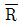
=27.4, k=25, n=5일 때 LCL은 약 얼마인가? (단, n=5인 경A=1.342, A2=0.577, A3=1.427, A4=0691이다.)- 10.71
- 13.83
- 129.27
- 132.39
(정답률: 50%)
30. 정규분포를 따르는 모집단에서 10개의 제품을 뽑아서 두께를 측정한 결과 데이터와 같은 자료를 얻었다. 제품두께의 모분산(σ2)에 대한 90% 신뢰구간은 약 얼마인가? (단, ?20.⑤(9)=3.33, ?20.95(9)=16.92, t0.975(9)=1.833, t0.975(9)=2.262이다.)
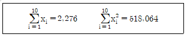
- 2.74≤σ2≤13.93
- 3.04≤σ2≤13.93
- 2.74≤σ2≤15.48
- 3.04≤σ2≤15.48
(정답률: 61%)
31. 일정한 길이 또는 일정 면적당 결점수를 관리하기 위해 사용하는 관리도를 결점수 관리도라고 하며, c 관리도와 u 관리도가 있다. 결점수 관리도는 결점수가 어떤 확률분포를 따른다고 가정하는가?
- 이항분포
- 초기하분포
- 균등분포
- 포아송분포
(정답률: 92%)
32. Me 관리도의 성능에 관한 설명으로 가장 적절한 것은?
 보다 1종 과오가 크다.
보다 1종 과오가 크다. 관리도보다 검출력이 좋지 않다.
관리도보다 검출력이 좋지 않다.- 극단적인 이상치에 민감하게 반응한다.
- 시료의 크기는 계산 편의상 짝수개가 좋다.
(정답률: 83%)
33. 모표준편차를 모르고 있을 때 모평균의 양측 신뢰구간추정에 사용되는 식으로 옳은 것은?
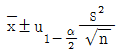
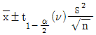
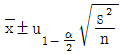
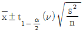
(정답률: 71%)
34. 계수치 축차 샘플링 검사방식(KS Q ISO－8422：2009)에 따른 계수치 축차 샘플링 검사에서 hA=1.445, hR=1.885, g=0.110일 때 n＜nt 조건에서의 합격판정선(A)를 바르게 표현한 것은?
- A=1.445+0.110ncum
- A=1.885+0.110ncum
- A=-1.445+0.110ncum
- A=-1.885+0.110ncum
(정답률: 81%)
35. 어떤 농기계를 생산하는 회사에서 최근 6개월 간의 부적합발생건수가 44건으로 나타났다. 이 공장의 월평균 발생건수에 대한 95% 신뢰구간의 추정범위는 약 얼마인가?
- 2.0∼12.6
- 5.2~9.5
- 5.8~9.8
- 9.2~14.8
(정답률: 69%)
36. 평균치가 1, 분산이 4인 정규분포를 하는 무한 모집단에서 9개의 임의 표본을 추출하여 산출되는 평균치를  라고 할 때
라고 할 때  의 표준편차는 약 얼마인가?
의 표준편차는 약 얼마인가?
- 0.44
- 0.67
- 4
- 36
(정답률: 84%)
37. 로트의 표준편차가 미지이고 p0, p1, α, β가 주어진 계량 1회 샘플링 검사 방식에서 시료의 크기(n)를 결정하는 식으로 옳은 것은? (단, K는 합격판정계수이다.)
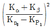
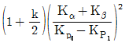
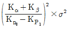
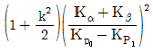
(정답률: 63%)
38. 관리도에 관한 설명으로 가장 거리가 먼 것은?
- 관리도는 제조공정이 잘 관리된 상태에 있는가를 조사하기 위해서 사용된다.
- 관리도의 사용 목적에 따라 표준값이 없는 관리도와 표준값이 있는 관리도로 구분된다.
- 우연원인에 의한 공정의 변동이 있으면 일반적으로 관리한계선 밖으로 특성치가 나타난다.
- 관리도는 일반적으로 꺾은선그래프에 1개의 중심선과 2개의 관리 한계선을 추가한 것이다.
(정답률: 84%)
39. 모표준편차를 모르는 경우 2개의 모평균 차에 대한 검정을 할 때 검정통계량(t0)을 바르게 표현한 것은? (단, 분산은 등분산이며, SA, SB는 변동, s2A, s2B는 시료의 분산을 의미한다.)
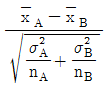
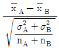
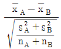
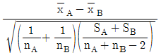
(정답률: 62%)
40. 샘플링 검사에 관한 설명으로 옳지 않은 것은?
- 계량형 샘플링 검사의 경우가 검사비용 및 관리비가 일반적으로 높다.
- 계수치 샘플링 검사에서는 각 검사단위를 합격, 불합격으로 분류한다.
- 계수치 샘플링 검사의 경우가 계량형 샘플링 검사의 경우보다 시료의 수가 적다.
- 계량형 샘플링 검사에서는 랜덤샘플링 외에 특성치가 정규분포를 따라야 한다고 볼 수 있는 경우에 한한다.
(정답률: 74%)
3과목: 생산시스템
41. JIT와 MRP에 대한 비교 설명으로 옳지 않은 것은?
- JIT는 납품업자를 동반자 관계로 보지만, MRP는 이해관계에 의한다.
- JIT는 재고를 부채로 인식하지만, MRP는 재고를 자산으로 인식한다.
- JIT에서 작업자 관리는 지시, 명령에 의하지만, MRP는 의견일치 등의 합의제에 의해 관리한다.
- JIT는 최소량의 로트 크기를 추구하지만, MRP는 생산준비비용과 재고유지비용의 균형점에서 로트의 크기를 결정한다.
(정답률: 68%)
42. 구매방법 중 기업이 현재 자재의 가격은 낮지만 앞으로는 가격이 상승할 것으로 예상되어 구매를 하는 방법으로 시장 가격변동을 이용하여 기업에 유리한 구매를 하려는 것은?
- 충동구매
- 일괄구매
- 분산구매
- 시장구매
(정답률: 74%)
43. MRP 시스템의 수립을 위한 요건으로 가장 관계가 깊은 것은?
- 자재명세표
- 자재불출대장
- 자재검사기록
- 불용품 관리대장
(정답률: 87%)
44. 각 작업의 작업시간과 납기가 다음과 같을 때 최단처리시간법으로 작업의 우선순위를 결정하려고 한다. 이때 평균완료시간과 평균납기지연시간은 각각 며칠인가? (단, 오늘은 9월 1일 아침이다.)
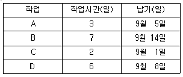
- 8.5일, 1.2일
- 9일, 2일
- 8.5일, 1.7일
- 9일, 2.5일
(정답률: 74%)
45. 테일러 시스템의 과업관리의 원칙에 해당되지 않는 것은?
- 작업에 대한 표준
- 이동조립법의 개발
- 공정한 1일 과업량의 결정
- 과업미달성 시 작업자의 손실
(정답률: 84%)
46. 간트챠트에서 “┏”기호는 무엇을 나타내는가?
- 예정작업
- 예정시작일
- 완료작업
- 예정종료일
(정답률: 93%)
47. 대상물을 손에서 놓는 동작으로, 대상물이 손을 떠나기 시작할 때 시작하여 손 또는 손가락에서 완전히 떨어졌을 때 끝나는 것을 의미하는 서어블릭 문자기호는?
- H
- TL
- TE
- RL
(정답률: 57%)
48. 요소작업에 대한 평균관측시간치가 0.25DM, 속도 레이팅이 90%, 난이도 조정계수가 46%인 경우의 정미시간은 약 몇 DM인가?
- 0.12
- 0.27
- 0.33
- 0.47
(정답률: 66%)
49. 생산의 정지 혹은 유해한 성능 저하를 초래하는 상태를 발견하기 위한 설비의 정기적인 검사는 다음 중 어디에 속하는가?
- 사후보전
- 예방보전
- 개량보전
- 보전예방
(정답률: 66%)
50. 설비의 효율화를 저해하는 6대 로스(가공 및 조립)와 가장 거리가 먼 것은?
- 가공로스
- 고장정지로스
- 속도저하로스
- 준비교환ㆍ조정로스
(정답률: 80%)
51. 기능식 공정이 비교적 복잡하게 얽혀 있는 공정흐름을 가지고 있는 반면 기계가 유사 부품군에 필요한 모든 작업을 처리할 수 있도록 배치되어 있어 모든 부품들이 동일경로를 따르게 되어 있는 생산시스템은?
- JIT 생산시스템
- MRP 생산시스템
- 모듈러(Modular) 생산시스템
- Gt 셀룰러(Cellular) 생산시스템
(정답률: 80%)
52. 기업의 목적을 효율적으로 달성하기 위하여 자신의 능력으로 핵심부분에 집중하고 조직내부활동 또는 기능의 일부를 외부의 조직 또는 외부 기업체에 전문용역을 활용하여 처리하는 경영기법을 의미하는 용어는?
- Loading
- Debugging
- Outsourcing
- Cross Docking
(정답률: 97%)
53. 다음 중 정성적인 방법으로 기술적 예측에 활용되고 장기예측이 가능하며, 정확성이 우수한 수요예측기법은?
- 델파이법
- 자료유추법
- 시장조사법
- 시계열분석법
(정답률: 67%)
54. 안전재고수준의 결정 요인과 가장 거리가 먼 것은?
- 품절의 위험
- 부적합품
- 재고유지비용
- 수요의 불확실성
(정답률: 50%)
55. 다음 중 작업자에게 최적의 경제적 기계 담당 대수를 결정하기 위하여 작성하는 것은?
- 가동률 분석표
- 작업자공정분석표
- 조(組)작업 분석표
- 작업자－기계작업분석표
(정답률: 97%)
56. 다음과 같은 PERT 네트워크에서 주공정의 값은 얼마인가?
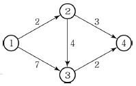
- 5일
- 8일
- 9일
- 14일
(정답률: 86%)
57. 정미시간을 산출하기 위하여 다중회귀분석 (Multiple Regression Analysis)법을 이용하는 방법은?
- PTS법
- 실적기록법
- 표준자료법
- 워크샘플링법
(정답률: 50%)
58. 작업방법의 개선을 위한 주요한 생산현장의 활동으로서 물건을 주체로 어떠한 공정을 통하여 가동되어 가는가를 공정의 순서에 따라 분석 조사하는 도표가 아닌 것은?
- 작업공정도
- 제품공정분석표
- 단순공정분석표
- 작업자공정분석표
(정답률: 70%)
59. 어떤 제품의 판매가격은 1,000원, 생산량이 20,000개이다. 이 제품의 고정비는 1,200,000원, 변동비는 4,000,000원일 때, 이 제품의 손익분기점은 얼마인가?
- 1,000,000원
- 1,500,000원
- 2,000,000원
- 2,500,000원
(정답률: 71%)
60. 다음 자료는 8월 첫째 주에서 셋째 주까지 A주유소에서 주유한 고객수이다. 3주 이동평균법을 적용하여 넷째 주 고객의 수를 예측하면 몇 명인가?
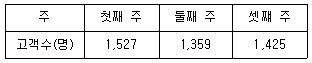
- 1,406명
- 1,437명
- 1,446명
- 1,545명
(정답률: 71%)
4과목: 신뢰성관리
61. 신뢰성 샘플링 검사에서 고장률을 척도로 하는 경우 λ0를 무엇이라 하는가?
- ARL
- AQL
- LTFR
- LTPD
(정답률: 74%)
62. α승 법칙에 따르는 콘덴서에 대하여 정상전압 220[V]를 가속전압 260[V]에서 가속수명시험을 하였다. 이 콘덴서는 α=5인 α승 법칙에 따른다. 가속계수는 약 얼마인가?
- 1.182
- 2.31
- 8
- 40
(정답률: 79%)
63. 1,000시간에서의 신뢰도가 0.998 이상이 되려면 MTTF가 약 얼마 이상이어야 하는가? (단, 부품의 수명분포는 지수분포를 따른다.)
- 395,412시간
- 499,500시간
- 510,000시간
- 547,511시간
(정답률: 78%)
64. 고장나무 그림 작성시 모든 입력사상이 공존하는 경우에만 출력사상이 발생하는 것을 무엇이라 하는가?
- 기본사상
- AND 게이트
- OR 게이트
- 제약게이트
(정답률: 64%)
65. 다음 중 신뢰성 관리를 효과적으로 실시하기 위해서 필요한 사항이 아닌 것은?
- 판매조건을 명확히 규정한다.
- 사용조건을 명확하게 규정한다.
- 고장의 정의를 명확히 규정한다.
- 신뢰성 목표값을 확실하게 정량화한다.
(정답률: 80%)
66. 신뢰도를 배분할 때 고려되는 항목이 아닌 것은?
- 신뢰도가 높은 구성품에는 높게 부여한다.
- 표준 구성품을 사용하여 호환성을 갖게 한다.
- 중요한 구성품에는 신뢰도를 높게 배정한다.
- 안전성, 경제성을 고려하여 시스템 전체로 보아 균형을 취한다.
(정답률: 59%)
67. 와이블 확률지를 사용하여 μ와 σ를 추정하는 방법에 관한 설명으로 가장 거리가 먼 것은?
- 고장시간 데이터 를 적은 것부터 크기순으로 나열한다.
- lnt0 과
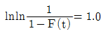
과의 교점을 m 추정점이라 한다. - 타점의 직선과 F(t)=63%와 만나는 점의 아래측 t 눈금을 특성수명 η의 추정치로 한다.
- m 추정점에서 타점의 직선과 평행선을 그을 때 그 평행선이 lnt=0.0과 만나는 점을 우측으로 연장하여 μ/η와 σ/η의 값을 읽는다.
(정답률: 92%)
68. 용어－신인성 및 서비스 품질(KS A 3004：2002)에서 규정하고 있는 고장을 유발하는 물리적, 화학적 또는 그 밖의 과정을 뜻하는 것은?
- 고장(Failure)
- 고장 원인(Failure Cause)
- 연관 고장(Relevant Failure)
- 고장 메커니즘(Failure Mechanism)
(정답률: 69%)
69. 어떤 재료에 가해지는 부하의 평균이 20kg/mm2이고, 표준편차는 3kg/mm2다. 그리고 사용재료의 강도는 평균이 35kg/mm2이고, 표준편차가 4kg/mm2이다. 이 재료의 신뢰도는 약 얼마인가?
- 95.45%
- 97.73%
- 99.73%
- 99.87%
(정답률: 48%)
70. 고장이 발생한 후에 아이템을 작동가능 상태로 회복하기 위한 보전은?
- 예방보전
- 사후보전
- 계획보전
- 경사보전
(정답률: 96%)
71. 고장이 지수분포를 하며 총작동시간이 T이고 고장개수가 r인 정수중단시험시 평균수명의 한쪽구간추정에서 신뢰하한값을 유의수준 α로 구하는 수식으로 옳은 것은?
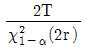
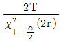
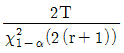
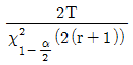
(정답률: 57%)
72. 고장률 λ를 가지는 리던던시 시스템을 그림과 같이 병렬로 구성하였을 때 신뢰도 함수R(t)는?
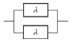
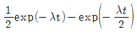
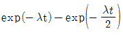
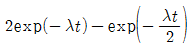
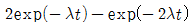
(정답률: 87%)
73. 300개의 전구에 대하여 수명시험을 실시할 경우 4시간까지의 고장개수가 80개일 때 불신뢰도 F(t)는 얼마인가?
- 0.13334
- 0.13456
- 0.21333
- 0.26667
(정답률: 77%)
74. 형상모수 3, 척도모수 1,000시간, 위치모수 1,000시간인 와이블 분포에 따르는 기계를 1,500 시간 사용하였을 때의 신뢰도는 약 얼마인가?
- 0.368
- 0.779
- 0.882
- 0.939
(정답률: 55%)
75. 욕조형(Bath－Tub) 고장률 곡선에서 디버깅(Debugging), 번인(Burn－in)등의 방법을 통해 나쁜 품질의 부품들을 걸러내야 할 필요성이 있는 시기로 가장 올바른 것은?
- 초기 고장기
- 우발 고장기
- 중간 고장기
- 마모 고장기
(정답률: 91%)
76. 어떤 시스템의 고장률(λ)과 수리율(μ)이 각각 0.025와 0.34일 때 가용도는 약 얼마인가?
- 0.0685
- 0.0735
- 0.932
- 0.954
(정답률: 85%)
77. 신뢰도가 각각 0.9인 부품 3개를 그림과 같이 연결하였을 때 이 시스템의 신뢰도는 얼마인가?
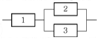
- 0.729
- 0.891
- 0.990
- 0.999
(정답률: 80%)
78. 2개의 부품이 모두 작동하여야만 장치가 작동되는 경우, 장치의 신뢰도를 0.97 이상이 되게 하려면 각 부품의 신뢰도는 최소한 약 얼마 이상이 되어야 하는가? (단, 사용된 2개 부품의 신뢰도는 동일하다.)
- 0.955
- 0.965
- 0.975
- 0.985
(정답률: 80%)
79. “제품이 주어진 사용 조건하에서 의도하는 기간 동안 정해진 기능을 성공적으로 수행할 확률”로 정의되는 개념은 무엇인가?
- 신뢰도
- 신뢰성
- 보전도
- 보전성
(정답률: 75%)
80. 평균순위를 이용하여 소시료 시험 결과 2번째 랭크에서의 누적고장확률밀도함수 f(t2)=0.02/시간 이었다. 이때 실험한 시료수가 4개이고, 3번째 고장난 시료의 고장시간이 20시간 경과 후 이었다면 2번째 시료가 고장난 시간은 얼마인가?
- 7.5시간
- 10시간
- 12시간
- 15시간
(정답률: 67%)
5과목: 품질경영
81. 모토롤라사(Motorola)에서 창안한 6시그마에 이르는 6단계의 순서가 바르게 배열된 것은?
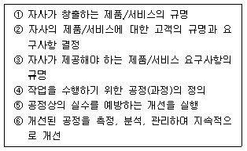
- ① － ② － ③ － ④ － ⑤ － ⑥
- ① － ③ － ② － ④ － ⑤ － ⑥
- ② － ① － ③ － ④ － ⑤ － ⑥
- ① － ④ － ② － ③ － ⑤ － ⑥
(정답률: 70%)
82. 계측 목적에 의한 분류 중 관리를 목적으로 측정 ㆍ평가하는 계측활동으로 보기에 가장 거리가 먼 것은?
- 환경조건에 관한 계측
- 생산능률에 관한 계측
- 시험ㆍ연구를 위한 계측
- 자재ㆍ에너지에 관한 계측
(정답률: 78%)
83. 한국산업표준의 부문 기호 중 “항공우주”를 의미하는 것은?
- P
- R
- V
- W
(정답률: 84%)
84. 치우침을 고려한 공정능력지수(CPK) 를 산출할 때, 치우침(Bias)의 의미에 대한 설명으로 옳은 것은?
- 공차와 자연공차와의 비율
- 공정의 평균과 규격한계와의 거리
- 목표치와 규격의 중앙값과의 거리
- 공정의 평균과 규격의 중앙값과의 거리
(정답률: 63%)
85. 현장의 개선활동에 있어서 소수 중점 원인을 찾기 위한 도구로서 사용되는 것은?
- 체크시트
- 특성요인도
- 파레토도
- 히스토그램
(정답률: 63%)
86. 공차가 똑같은 부품 16개를 조립하였을 때 공차가 10/300이었다면 각 부품의 공차는 얼마인가?
- 1/1,200
- 10/1,200
- 1/600
- 10/600
(정답률: 68%)
87. 품질전략을 수립할 때 계획단계(전략의 형성단계)에서 SWOT 분석을 많이 활용하고 있다. 여기서 “T”는 무엇을 의미하는가?
- 기회
- 위협
- 강점
- 약점
(정답률: 96%)
88. 품질보증활동은 신제품 개발에서부터 그 제품의 수명이 끝나는 전체 생산과정에서 전개되므로 각 부문의 참여 없이는 이들의 업무가 제대로 수행될 수 없다. 유형별 품질보증시스템 에 관한 설명으로 옳지 않은 것은?
- 프로젝트별 품질보증시스템－프로젝트별로 프로젝트 매니저가 인사권과 예산권을 갖고 품질보증과 생산을 동시에 책임지는 시스템이다.
- 부문별 품질보증시스템－품질보증활동을 수행하는 부문에 따라, 즉 조사, 기획, 설계 등의 담당하는 부문이 품질보증을 행하는 시스템이다.
- 기능별 품질보증시스템－품질평가, 품질감사, 검사, 신뢰성시험 등의 기능별로 나누어 품질보증을 행하는 시스템이다.
- 업무별 품질보증시스템－품질보증을 전담하는 부서를 만들어 전담부서에서 품질보증에 관한 모든 사항을 수행하는 시스템이다.
(정답률: 64%)
89. 품질경영시스템－요구사항(KS Q ISO 9001：2009)에서 프로세스 접근방법은 제품실현과 품질경영시스템 수행을 포함하는데 이에 주 요구사항 항목이 아닌 것은?
- 경영책임
- 품질관리
- 제품실현
- 측정, 분석 및 개선
(정답률: 70%)
90. 다음 중 작업표준을 작성할 때 기술할 필요가 없는 항목은?
- 사고시의 처리
- 작업시의 주의사항
- 재료 부분품의 선정기준
- 작업의 관리항목과 그 방법
(정답률: 60%)
91. 문서관리의 근본적 목적으로 가장 적절한 것은?
- 정확한 정보가 기록으로 남도록 하기 위하여
- 문제가 발생하는 경우 근거로 사용하여야 하기 때문에
- 올바른 문서만이 필요한 장소에서 사용되어 지도록 하기 위하여
- 외부기관의 심사에 대비하여 체계적으로 업무가 진행되고 있음을 보장하기 위하여
(정답률: 66%)
92. 품질비용과 적합품질과의 관계에 관한 설명으로 가장 적절한 것은?
- 평가비용은 적합품질에 관계없이 일정하다.
- 실패비용은 적합품질에 관계없이 일정하다.
- 적합품질이 향상될수록 예방비용은 감소한다.
- 적합품질이 향상될수록 실패비용은 감소한다.
(정답률: 78%)
93. 고객이 요구하는 참된 품질을 언어표현에 의해 체계화하여 이것과 품질특성과의 관련을 짓고, 고객이 요구를 대용특성으로 변화시키며 품질설계를 실행해 나가는 표가 최근 매우 유용하게 사용되고 있는데 이와 같은 품질표를 사용하는 기법은?
- QFD
- 친화도
- FMEA/FTA
- 매트릭스 데이터 해석
(정답률: 75%)
94. 다음 중 고객만족을 결정하는 직접적인 구성요소로 보기에 가장 거리가 먼 것은?
- 환경보호활동
- 직원의 서비스
- 상품의 하드웨어 가치
- 상품의 소프트웨어 가치
(정답률: 93%)
95. 다음 중 제조물책임법에 따른 용어의 정의로 가장 거리가 먼 것은?
- 제조업자라 함은 제조물의 설계, 제조 또는 판매를 업으로 하는 자를 말한다.
- 제조물이라 함은 다른 동산이나 부동산의 일부를 구성하는 경우를 포함한 제조 또는 가공된 동산을 뜻한다.
- 결함이라 함은 당해 제조물에 제조, 설계 또는 표시상의 결함이나 기타 통상적으로 기대 할 수 있는 안전성이 결여되어 있는 것을 뜻한다.
- 표시상의 결함은 제조업자가 합리적인 설명, 지시, 경고 기타의 표시를 하였더라면 당해 제조물에 의하여 발생될 수 있는 피해나 위험을 줄이거나 피할 수 있었음에도 이를 하지 아니한 경우를 말한다.
(정답률: 52%)
96. ITT의 품질담당 부사장을 역임한 크로스비(P. B. Crosby)의 품질경영에 대한 4가지 기본사상과 가장 거리가 먼 내용은?
- 수행표준은 무결점이다.
- 다음 공정은 나의 고객이다.
- 품질은 고객요구사항에의 일치로 정의한다.
- 고객의 요구사항을 위해 공급자가 갖추어야 되는 품질 시스템은 처음부터 올바르게 일을 행하는 것이다.
(정답률: 57%)
97. 표준화의 원리에 관한 설명으로 옳지 않은 것은?
- 표준화란 단순화의 행위이다.
- 표준은 실시하지 않으면 가치가 없다.
- 표준의 제정은 전체적인 합의에 따라야 한다.
- 국가규격의 법적 강제의 필요성은 고려하지 않는다.
(정답률: 77%)
98. 파이겐바움(Feigenbaum)이 분류한 품질관리부서의 하위기능부문 3가지에 해당되지 않는 것은?
- 품질관리기술부문
- 공정관리기술부문
- 품질정보기술부문
- 원가관리기술부문
(정답률: 63%)
99. 6 시그마 품질을 불량률 3.4ppm과 연관시킬 때 목표치로부터 공정평균의 치우침을 어느 정도까지 허용한 것인가?
- ±0.5σ
- ±1.5σ
- ±3σ
- ±6σ
(정답률: 67%)
100. 정부로부터 품질을 보증 받는 효과를 지니며, 소비자 입장에서는 안심하고 제품을 살 수 있도록 하는 품질보증표시에 대한 국가별 표시가 옳지 않은 것은?
- 한국－KS
- 영국－BS
- 미국-US
- 일본-JIS
(정답률: 88%)